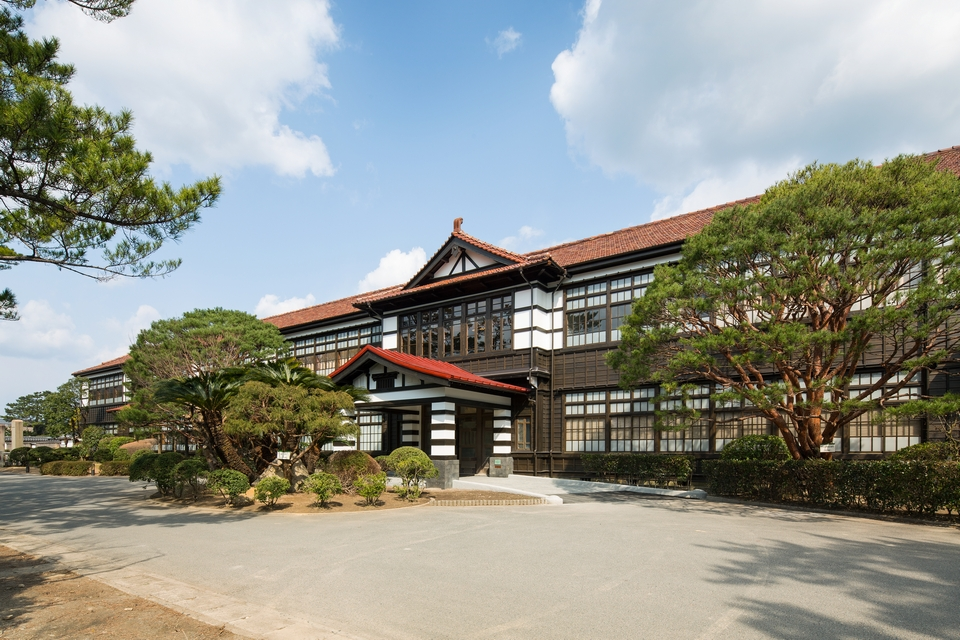
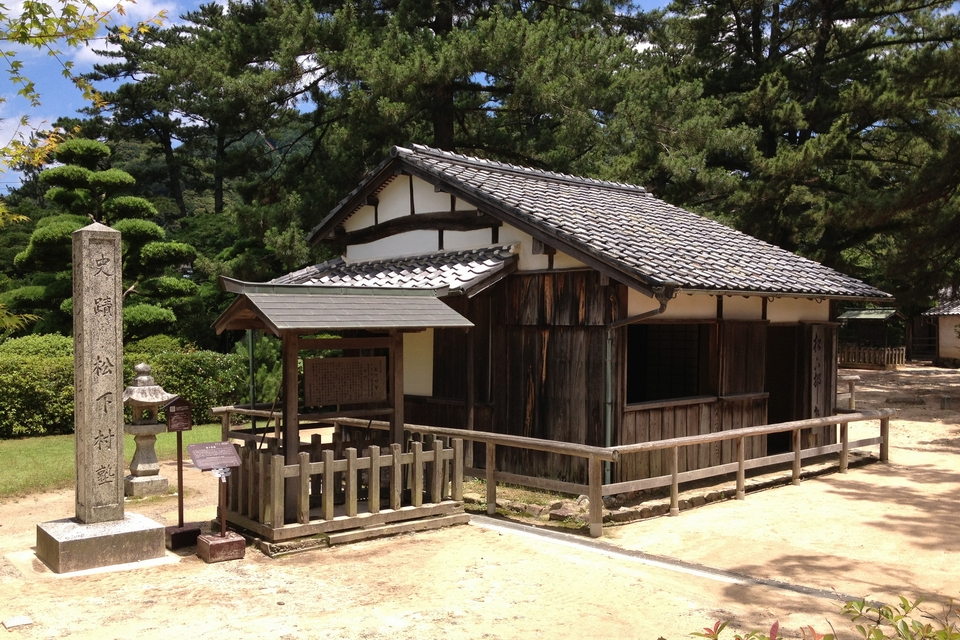
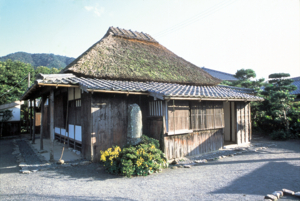
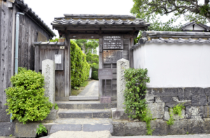
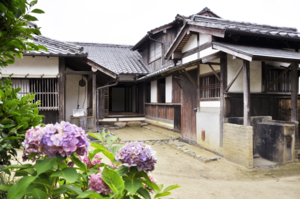

Префектура Ямагути · Хаги · история
Прогулка по Хаги: где рождалась эпоха Мэйдзи

Здесь жили будущие премьер-министры и самураи, перевернувшие историю страны. По городку Хаги маршрут проходит пешком, и каждый дом на этом пути что-то эпохе Мэйдзи подарил.
Реставрация Мэйдзи, переворот 1868 года, перевернула Японию, и у этого переворота есть маленькая родина: городок Хаги на берегу Японского моря, где стояла столица княжества Тёсю. Из этого княжества вышло столько реформаторов, что их имена знает каждый японский школьник. Пройти по местам их жизни в Хаги можно за один день.
Святыня Сёин
Школа на пятьдесят квадратных метров
Частная школа Сёка Сондзюку стоит на земле святилища Сёин. Держал её Ёсида Сёин (1830–1859), мыслитель и педагог, которого власти казнили в тридцать лет: слишком опасным считалось его желание менять страну. Из крошечной школы, полсотни квадратных метров, вышли люди, двигавшие Реставрацию Мэйдзи: Такасуги Синсаку (1839–1867), самурай, собравший народные отряды кихэйтай; Ито Хиробуми (1841–1909), будущий первый премьер-министр Японии; Ямагата Аритомо (1838–1922), будущий создатель современной японской армии и дважды премьер-министр. Осмотр по территории свободный, само здание школы можно видеть только снаружи. Кроме школы, по территории святилища рассеяны памятные места, связанные с Сёином.

Школа Сёка Сондзюку (святилище Сёин)
- Адрес
- префектура Ямагути, город Хаги, Тинто, 1537
- Телефон
- +81 838-22-4643
- Часы работы
- осмотр свободный (здание школы только снаружи)
- Сайт
- shoin-jinja.jp
Училище Мэйрин
Триста лет учёбы на одном месте
Задолго до Сёина в Хаги работала княжеская школа Мэйринкан: её в 1718 году основал Мори Ёсимото (1691–1734), пятый князь Тёсю, чтобы учить детей своих вассалов. На её месте стоит деревянный корпус старой начальной школы Мэйрин, где классы шли до марта 2014 года. Теперь это туристический центр «Хаги Мэйринкан», с которого удобно начинать прогулку по городу.
«Хаги Мэйринкан»
- Адрес
- префектура Ямагути, город Хаги, Эмукай, 602
- Телефон
- +81 838-21-0304
- Часы работы
- 9:00–17:00
- Выходные
- без выходных
- Сайт
- hagimeirin.jp
Дом Ито
Дом с соломенной крышей
Небольшой дом с соломенной крышей: старый дом Ито Хиробуми. Здесь он жил до 1868 года, когда уехал губернатором в префектуру Хёго. Осмотреть дом можно только снаружи.

Старый дом Ито Хиробуми
- Адрес
- префектура Ямагути, город Хаги, Тинто, 1515
Рождение Такасуги
Колодец и хайку
Место рождения Такасуги Синсаку, самого дерзкого самурая конца эпохи. Сейчас открыта южная половина дома. Во дворе сохранился колодец, в котором, по преданию, грели воду для его первого омовения, и стела с хайку его собственного сочинения.

Место рождения Такасуги Синсаку
- Адрес
- префектура Ямагути, город Хаги, Минамифурухаги, 23
- Телефон
- +81 838-22-3078
- Часы работы
- 9:00–17:00
- Выходные
- может закрываться без предупреждения, теперь это частное владение
Дом Кидо
Двадцать лет до Эдо
Родной дом Кидо Такаёси (1833–1877), одного из «трёх героев» Реставрации Мэйдзи. Здесь он прожил первые двадцать лет, пока не уехал учиться в Эдо. Внутри показывают комнату, где он родился, и фотографии его детских лет.

Старый дом Кидо Такаёси
- Адрес
- префектура Ямагути, город Хаги, Гофукумати, 2-37
- Телефон
- +81 838-25-3139 (туристический отдел города Хаги, будни 8:30–17:15)
- Часы работы
- 9:00–17:00
- Выходные
- без выходных
Скала Данго
Где родился Ёсида Сёин
Скалу Дангоива называют лучшей смотровой площадкой Хаги: с неё виден весь город. Здесь, у подножия, в 1830 году родился Ёсида Сёин, второй сын княжеского самурая.
Место рождения Ёсиды Сёина
- Адрес
- префектура Ямагути, город Хаги, Тинто, 1433-1
Люди, родившиеся в смутные годы конца эпохи самураев, отсюда уходили менять страну. Что они думали и какими детьми были, лучше всего видно на месте: прогулка по Хаги складывается в один рассказ.